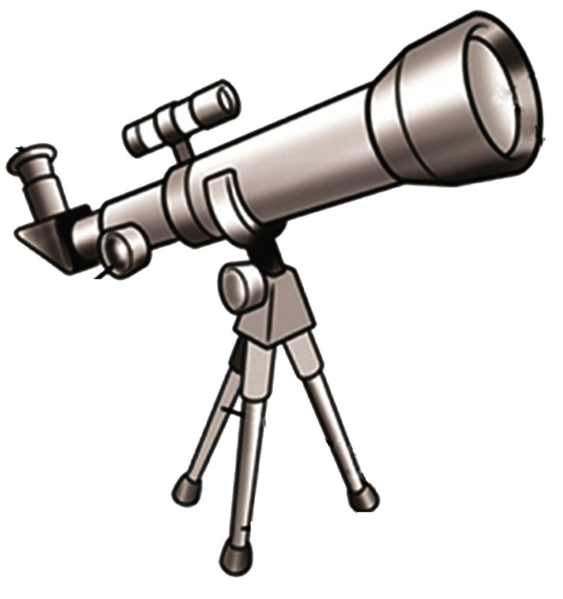
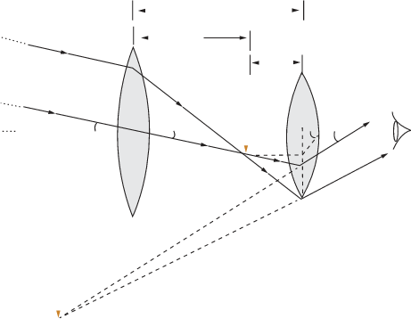

Since the astronomical telescope uses a lens as its objective glass, it is also called a refracting telescope. Figure 6.7 shows some parts of the astronomical telescope.

Eyepiece Focusing knob Objective lens TripodMode of action of an astronomical telescope
A telescope is used to provide angular magnification of distant objects. Light from a distant object enters the objective lens and a real image is formed in the tube at the second focal point of the objective lens. This image becomes the object for the eyepiece. The position of the eyepiece lens is adjusted until the image from the objective lens falls at the focal point of the eyepiece. The image of the eyepiece is inverted and magnified as illustrated in Figure 6.8. Note that the main considerations with an astronomical telescope are its light-gathering power and its resolution or resolving power. The light-gathering power depends on the area of the objective lens.
The larger the diameter of the objective lens, the brighter the image observed. The resolving power, which is the ability to observe two close objects distinctly, also depends on the diameter of the objective lens. So, the desire is to make astronomical telescopes with an objective lens of larger diameter. Nevertheless, lenses with big diameters tend to be very heavy and therefore, difficult to make and to be supported by their edges. Further, it is rather difficult and expensive to make such large-sized lenses that may form images that are free from any kind of distortions.

L Eyepiece B'' B' A' E A'' Objective lensMagnification of an astronomical telescope
The magnifying power, , of the astronomical telescope is given by the ratio of the angle subtended by the final image at the eye and the angle subtended by the object at the objective lens. That is;
Assuming that the angles are very small, we have, and